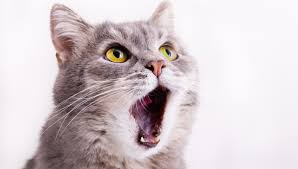
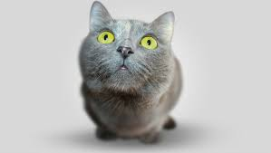

Gatos

Si se clasifica sería en vertebrados, mamíferos, carnívoros y a su vez dentro de gran grupo de Animales Domésticos...
Leer másAlimentación

Al ser un animal domestico la alimentación queda a cargo del hombre, sin embargo...
Leer más
Fiebre en Gatos

Tu gato está un poco extraño, actúa de forma rara y le ha cambiado el carácter, está poco activo ...
Leer másComunicación
El maullido es el sonido más característico de los gatos y el ronroneo son sonidos....
Leer másCuando Esterilizar a tú Gato-Gata

Si esterilizaS a tu gato-gata es una buena idea, qué ventajas tiene...
Leer más¿Porque los gatos muerden?

Los gatos pueden llegar a morder en diferentes circunstancias. Cuando juegan, se sienten agredidos...
Leer másLos mejores Despertadores

Sin duda los gatos a la hora de dormir guardan hábitos que no siempre coinciden con los nuestros. Dormilones durante el día...
Leer másAdoptar un Gato el mejor amigo
Al adoptar un gato, cuando entra en casa por primera vez, uno no puede dejar de sentir un cosquilleo en el estómago..
Leer másLos sentidos de los gatos
Visión,audición,olfato,tacto,gusto..
Leer másAdopción de Gatos y Amigos Perros
Adopción en Guadalajara de Perros y Gatos además de Información
Adopción de Gatos y Amigos Perros
Se dedican a mejorar la integración del perro a la sociedad humana para lograr una convivencia armónica y benéfica para ambas especies.Realizan adopciones tambien de gatos.
Ir al sitio
Adopción de Gatos y Amigos Perros
Paginá que ayuda a la adopcion de gatos y perrerros en países como:Argentina,Chile,Colombia, España,
México y Perú.
Toma Café y Ayuda a un Gato
With supporting text below as a natural lead-in to additional content.
Go somewhereToma Café y Ayuda a un Gato
With supporting text below as a natural lead-in to additional content.
Go somewhereToma Café y Ayuda a un Gato
With supporting text below as a natural lead-in to additional content.
Go somewhereToma Café y Ayuda a un Gato
With supporting text below as a natural lead-in to additional content.
Go somewhereToma Café y Ayuda a un Gato
With supporting text below as a natural lead-in to additional content.
Go somewhereToma Café y Ayuda a un Gato
Catfecito es un espacio único que permite a sus comensales convivir con adorables mininos.
Podras encontrar comida reconfortante como hamburguesas, ensaladas, pastas, sushi y deliciosos postres.Además
toda la comida está decorada con motivos muy felinos.
Ven y disfruta del mejor Cat-café de la ciudad en compañía de los gatitos, y recuerda que tu consumo se convierte en donativo para La Casa del Gato Gazzu A.C.
Encuéntranos en Av Baja California #266, Col. Hipódromo.Horarios: Martes a sábado de 12:00 a 20:00 hrs. y Domingo de 13:00 a 20:00 hrs.
Adopción de Gatos y Amigos Perros
Se dedican a mejorar la integración del perro a la sociedad humana para lograr una convivencia armónica y benéfica para ambas especies.Realizan adopciones tambien de gatos.
Ir al sitio
Adopción de Gatos y Amigos Perros
Paginá que ayuda a la adopcion de gatos y perrerros en países como:Argentina,Chile,Colombia, España,
México y Perú.